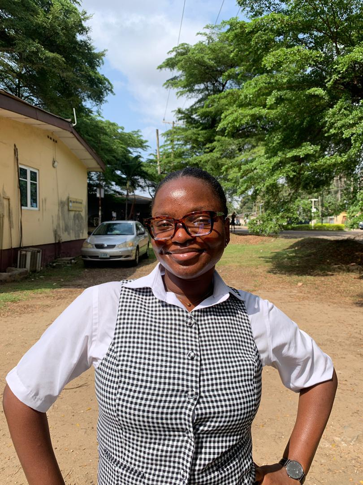
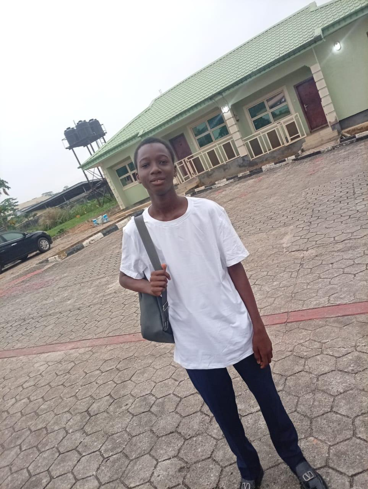
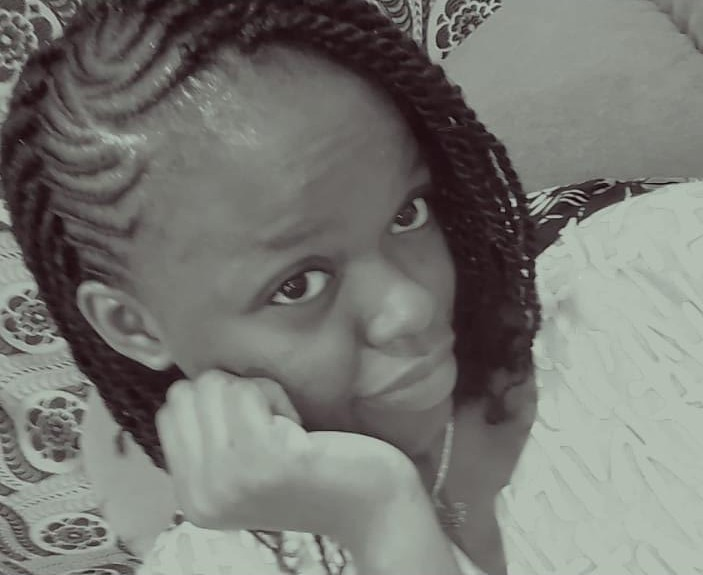

Coaching & mentoring
Encouragement and guidance to help students build confidence and stay focused on their goals.
Investing in young talent
We walk alongside students with exceptional talent, helping them overcome financial barriers and pursue their education with confidence.
Supporting students through secondary school and on to further education.
Our story
Every year, students with exceptional ability struggle to continue their education because of financial constraints.
Amb. Tokunbo Oderinde Foundation (ATOF) was established to help change that story—supporting young people as they work toward academic excellence, further education, and their full potential.
Discover how we helpOur mission
To empower students to excel in their academics, continue their education, and make the most of their potential.
A message of possibility
Amb. Tokunbo Oderinde founded ATOF with a commitment to education and empowering young talents.
The foundation supports students facing financial barriers as they work toward academic excellence and continue their education.
Explore how ATOF supports studentsWhat we provide
Guidance and assistance for students pursuing academic excellence and the next step in their education.
Encouragement and guidance to help students build confidence and stay focused on their goals.
Support as students navigate admission and take their next step into further education.
Assistance that helps students continue learning and work toward their academic ambitions.
Help with the financial barriers that can keep exceptional students from continuing their education.
Student journeys
A glimpse of the students and aspirations represented in the foundation's story.

Law · LASUFormer Reagan MBGSS student Law, LASU

Medicine · OAUFormer Baptist Academy student Medicine, OAU, Ile-Ife

Law · UnilagFormer Reagan MBGSS student Law, Unilag
Names and study pathways shown as provided in the foundation's introductory material.
Photo gallery
Moments from ATOF gatherings, student presentations, and shared celebrations.
Join us
Be part of a student's journey toward fulfilling their educational ambitions. Your support helps transform lives and empower young people for the future.
Get in touchWays to give
For donation questions, please contact the foundation before making a transfer.